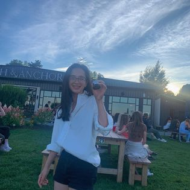
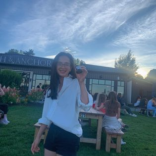

My name is Linh Le, also known as Le Thi My Linh, and I'm currently 26 years old. I was born and raised in the beautiful country of Vietnam. When it comes to describing myself, I would say that I tend to be introverted and occasionally moody. While I acknowledge that this isn't the most positive trait, I'm also a person with a warm heart.
I completed my education in Culinary Management at George Brown College in 2019 and subsequently worked as a sous chef in an upscale restaurant located within one of Toronto's renowned hotels. In 2020, I made a move to Halifax and assumed the role of a head chef in a Middle Eastern restaurant. In 2021, I made a significant career change and transitioned into the field of web programming. I'm a passionate individual with a diverse background that reflects my journey of self-discovery. Originally hailing from the picturesque country of Vietnam, I've embarked on a unique path that has taken me from the culinary world to the dynamic realm of web programming.
At 26 years old, I made a bold career shift after realizing my deep fascination with computers and web development while working as a head chef. This newfound love for technology and design compelled me to pursue formal education in web programming at NSCC. My transition from a sous chef in a prestigious Toronto hotel to leading the kitchen at a Middle Eastern restaurant in Halifax has given me a rich tapestry of experiences and skills that I'm now channeling into crafting an exceptional online presence for my very own restaurant. With a naturally introverted disposition and a warm heart, I'm driven by the desire to create digital solutions that captivate and connect with people. Join me on this exciting journey of culinary and technological fusion!
Me and my husband now own a small Vietnamese Restaurant named Banh Mi A&B on quinpool, Halifax. My husband and I are passionate about food and cooking, and we spent many years experimenting with different cuisines and cooking styles. Along the way to Canada, we discovered our love for Vietnamese cuisine and began exploring the many different dishes and flavors that are characteristic of our own cuisine. As our passion for Vietnamese cuisine grew, we began to dream of opening our own restaurant. We wanted to create a place where people in Halifax community could come together to enjoy authentic Vietnamese dishes which were made with the freshest and highest quality ingredients from local. This dream became a reality, and today, we are proud owners of Banh Mi A&B on Quinpool, where we invite you to experience the delicious flavors of Vietnam.
 
